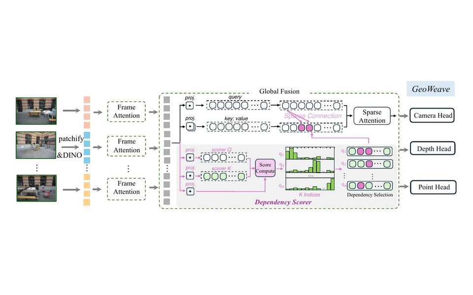
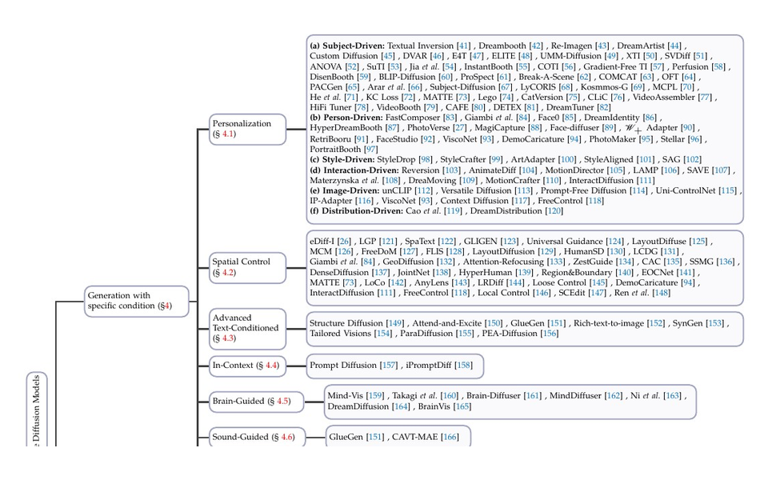

3D Reconstruction
Feed-forward and sparse-view reconstruction, multi-view geometry, cross-view reasoning, 3D Gaussian Splatting, and scalable 3D foundation models.
Ph.D. Student · 3D Vision and Generative Models
I am a Ph.D. student in Control Science and Engineering at Beijing University of Posts and Telecommunications, advised by Prof. Jianqin Yin at the BUPT-COST Lab. I am expected to graduate in June 2027.
My research lies at the intersection of 3D vision and generative models, with an emphasis on feed-forward 3D reconstruction, 3D world models, and controllable visual generation. I received my B.Eng. degree in Internet of Things Engineering from BUPT in 2022.
I am currently seeking internship or full-time opportunities in 3D vision, world models, and generative AI.

Feed-forward and sparse-view reconstruction, multi-view geometry, cross-view reasoning, 3D Gaussian Splatting, and scalable 3D foundation models.
Structured 3D scene representations and generation, including scene-level latent modeling, flow-based generation, and editable 3DGS environments.
Diffusion and flow models for controllability transfer, in-domain generation, and resolution extrapolation across U-Net- and Transformer-based architectures.
Spatial Intelligence and 3D World Model Intern
Special Talent Program Intern · 3D Reconstruction Foundation Model R&D
Worked on feed-forward 3D reconstruction foundation models, including sparse attention, selective cross-view communication, high-resolution reconstruction, large-scale distributed training, and multi-source data construction and evaluation.
* Equal contribution

AAAI 2026 · Oral Presentation
Reveals the implicit positional role of convolutional zero padding and introduces a training-free boundary-complement strategy for high-resolution diffusion inference.

SIGGRAPH Asia 2026 · Conditional Accept
Introduces selective cross-view communication to improve pose and point-cloud reconstruction under weak overlap and distracting views.

CVPR 2026
Studies resolution extrapolation in Diffusion Transformers through positional encoding, attention receptive fields, and frequency-aware detail preservation.

CVPR 2025
Transfers controllable generation capabilities to image-only target domains through guidance-decoupled prior preservation.

IEEE TCSVT 2025
Extracts object-level meshes from large 3D scenes using Gaussian segmentation and diffusion priors for occluded regions.

IEEE TPAMI 2025
Surveys controllable text-to-image diffusion across condition injection, structural control, editing, and personalization.

AAAI 2024
Uses pose-guided attention and adaptive feature selection to improve image-aware 2D-to-3D human pose lifting.